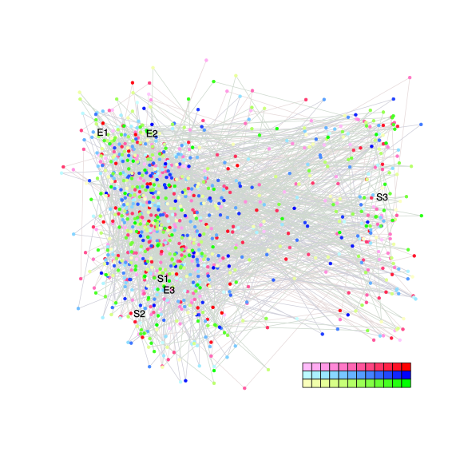
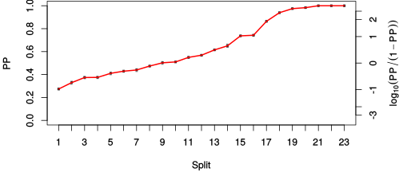
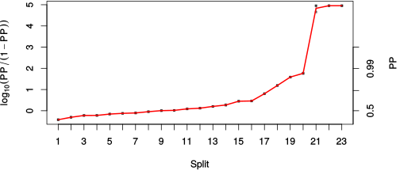

| chain # | burnin | subsample | Iterations (remaining) | command line | subdirectory | directory |
|---|---|---|---|---|---|---|
| 1 | 10000 | 1 | 90000 | bali-phy E6_AA_red3_v2_Lambda_Alpha_all4Manatees_BetaGamma.fas -s 64323 -n E6_red3_v2_Lambda_Alpha_all4Manatees_BetaGamma_c1 | E6_red3_v2_Lambda_Alpha_all4Manatees_BetaGamma_c1-1 | /DATA/work/ONCOGENEVOL/database/trees/Bali-Phy/red3_v2/E6_all4Manatees |
| 2 | 10000 | 1 | 90000 | bali-phy E6_AA_red3_v2_Lambda_Alpha_all4Manatees_BetaGamma.fas -s 47934 -n E6_red3_v2_Lambda_Alpha_all4Manatees_BetaGamma_c2 | E6_red3_v2_Lambda_Alpha_all4Manatees_BetaGamma_c2-1 | /DATA/work/ONCOGENEVOL/database/trees/Bali-Phy/red3_v2/E6_all4Manatees |
| 3 | 10000 | 1 | 90000 | bali-phy E6_AA_red3_v2_Lambda_Alpha_all4Manatees_BetaGamma.fas -s 32479 -n E6_red3_v2_Lambda_Alpha_all4Manatees_BetaGamma_c3 | E6_red3_v2_Lambda_Alpha_all4Manatees_BetaGamma_c3-1 | /DATA/work/ONCOGENEVOL/database/trees/Bali-Phy/red3_v2/E6_all4Manatees |
| P(data|M) = -7621.865 +- 0.228 | Complete sample: 109068 topologies | 95% Bayesian credible interval: 95954 topologies |
Phylogeny Distribution

| Partition support: Summary |
| Partition support graph: SVG |
{kind=link}
| 50% consensus | Newick (+PP) | SVG | |||||
| 66% consensus | Newick (+PP) | SVG | |||||
| 80% consensus | Newick (+PP) | SVG | |||||
| 90% consensus | Newick (+PP) | SVG | |||||
| 95% consensus | Newick (+PP) | SVG | |||||
| 99% consensus | Newick (+PP) | SVG | |||||
| 100% consensus | Newick (+PP) | SVG | |||||
| MAP | Newick (+PP) | SVG | |||||
| greedy | Newick (+PP) | SVG |
{kind=link}
{kind=link}
{kind=link}
{kind=link}
{kind=link}
{kind=link}
{kind=link}
{kind=link}
Alignment Distribution
Partition 1
| Diff | Min. %identity | # Sites | Constant | Informative | ||||
|---|---|---|---|---|---|---|---|---|
| Initial | FASTA | HTML | Diff | 1.41% | 238 | 1 (0.42%) | 216 (90.8%) | |
| Best (WPD) | FASTA | HTML | AU | 12% | 427 | 11 (2.58%) | 136 (31.9%) |
Mixing
{kind=link}
{kind=link}
| burnin (scalar) | ESS (scalar) | ESS (partition) | ASDSF | MSDSF | PSRF-CI80% | PSRF-RCF |
|---|---|---|---|---|---|---|
| 1100 | 657.9 | 1545.135 | 0.003 | 0.008 | 1.001 | 1.015 |
Projection of RF distances for the first 3 chains3D | Variation of split PPs across chains |
Scalar variables
| Statistic | Median | 95% BCI | ACT | ESS | burnin | PSRF-CI80% | PSRF-RCF |
|---|---|---|---|---|---|---|---|
| prior | -244.2 | (-279.4, -212.5) | 176.4 | 1530 | 809 | 1 | 1.004 |
| prior_A1 | -299.8 | (-331.1, -273) | 214.2 | 1260 | 1100 | 1 | 1.001 |
| likelihood | -7603 | (-7622, -7583) | 103.7 | 2602 | 533 | 0.9998 | 1.003 |
| logp | -7847 | (-7880, -7819) | 83.27 | 3242 | 662 | 1.001 | 1.005 |
| Heat.beta | 1 | ||||||
| Scale1 | 13.35 | (9.242, 18.44) | 1.018 | 265238 | 117 | 1 | 0.9996 |
| S1.F.pi.A | 0.06735 | (0.0567, 0.0783) | 8.057 | 33512 | 545 | 1 | 0.9993 |
| S1.F.pi.R | 0.06838 | (0.05739, 0.08011) | 8.38 | 32221 | 596 | 1 | 1 |
| S1.F.pi.N | 0.0314 | (0.02464, 0.0387) | 7.885 | 34241 | 332 | 0.9999 | 0.998 |
| S1.F.pi.D | 0.0433 | (0.03431, 0.05275) | 8.554 | 31565 | 220 | 0.9998 | 0.995 |
| S1.F.pi.C | 0.05861 | (0.04668, 0.0713) | 8.551 | 31576 | 331 | 0.9999 | 0.9962 |
| S1.F.pi.Q | 0.03564 | (0.02887, 0.04283) | 8.26 | 32687 | 263 | 1 | 0.9986 |
| S1.F.pi.E | 0.05478 | (0.04529, 0.06548) | 8.621 | 31319 | 271 | 1 | 0.9971 |
| S1.F.pi.G | 0.06598 | (0.05293, 0.07945) | 8.797 | 30692 | 437 | 0.9998 | 0.9978 |
| S1.F.pi.H | 0.02415 | (0.0176, 0.03096) | 8.203 | 32915 | 361 | 1 | 1 |
| S1.F.pi.I | 0.04973 | (0.04079, 0.05907) | 8.482 | 31831 | 383 | 0.9999 | 1.003 |
| S1.F.pi.L | 0.1264 | (0.1107, 0.1429) | 8.274 | 32634 | 388 | 1.001 | 0.9982 |
| S1.F.pi.K | 0.03705 | (0.02948, 0.04491) | 8.431 | 32024 | 411 | 1 | 1.007 |
| S1.F.pi.M | 0.008993 | (0.005584, 0.01295) | 7.99 | 33792 | 231 | 1 | 0.9927 |
| S1.F.pi.F | 0.05255 | (0.04226, 0.06313) | 8.031 | 33618 | 312 | 1 | 1 |
| S1.F.pi.P | 0.03921 | (0.02992, 0.04915) | 8.082 | 33406 | 447 | 0.9999 | 1.001 |
| S1.F.pi.S | 0.05795 | (0.04864, 0.06757) | 7.999 | 33756 | 302 | 1 | 0.9991 |
| S1.F.pi.T | 0.05109 | (0.04207, 0.06074) | 8.263 | 32675 | 293 | 1 | 1.002 |
| S1.F.pi.W | 0.02283 | (0.016, 0.03051) | 8.104 | 33316 | 466 | 0.9999 | 1.002 |
| S1.F.pi.Y | 0.04934 | (0.03979, 0.05992) | 8.072 | 33447 | 255 | 0.9995 | 1.004 |
| S1.F.pi.V | 0.05225 | (0.0425, 0.06204) | 8.481 | 31835 | 145 | 0.9996 | 0.9956 |
| I1.RS07.meanIndelLengthMinus1 | 12.37 | (7.622, 18.36) | 4.148 | 65098 | 324 | 0.9997 | 1.002 |
| I1.RS07.logLambda | -4.953 | (-5.352, -4.573) | 7.053 | 38280 | 179 | 1 | 0.9994 |
| |A1| | 427 | (403, 448) | 410.4 | 657 | 736 | 0.9886 | 1.015 |
| #indels1 | 32 | (29, 36) | 207.4 | 1302 | 635 | 0.8 | 1.001 |
| |indels1| | 333 | (299, 377) | 128.4 | 2103 | 733 | 0.9866 | 1.002 |
| #substs1 | 1479 | (1459, 1497) | 363.2 | 743 | 1073 | 0.96 | 1.003 |
| Scale1*|T| | 17.25 | (16.21, 18.32) | 2.169 | 124460 | 291 | 1 | 0.999 |
| |A| | 427 | (403, 448) | 410.4 | 657 | 736 | 0.9886 | 1.015 |
| #indels | 32 | (29, 36) | 207.4 | 1302 | 635 | 0.8 | 1.001 |
| |indels| | 333 | (299, 377) | 128.4 | 2103 | 733 | 0.9866 | 1.002 |
| #substs | 1479 | (1459, 1497) | 363.2 | 743 | 1073 | 0.96 | 1.003 |
| |T| | 1.292 | (0.8844, 1.757) | 1.002 | 269393 | 85 | 0.9998 | 1 |